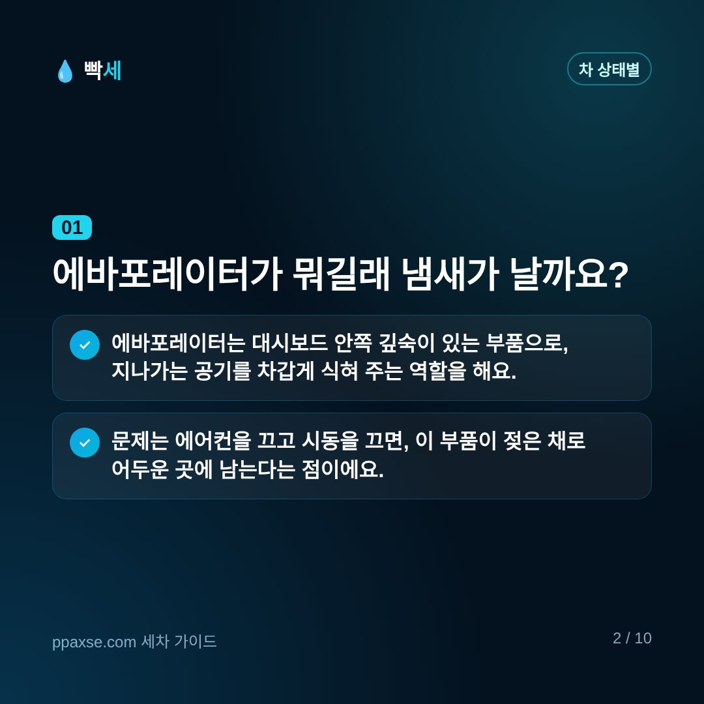
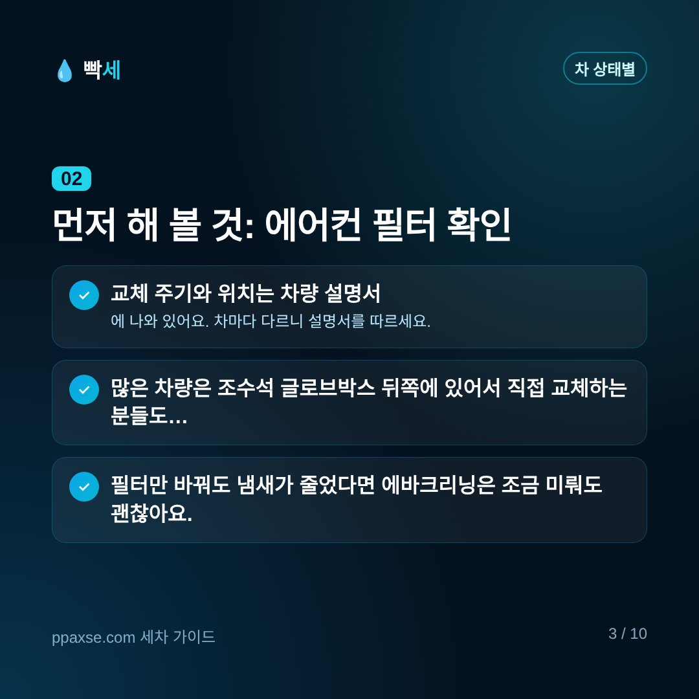
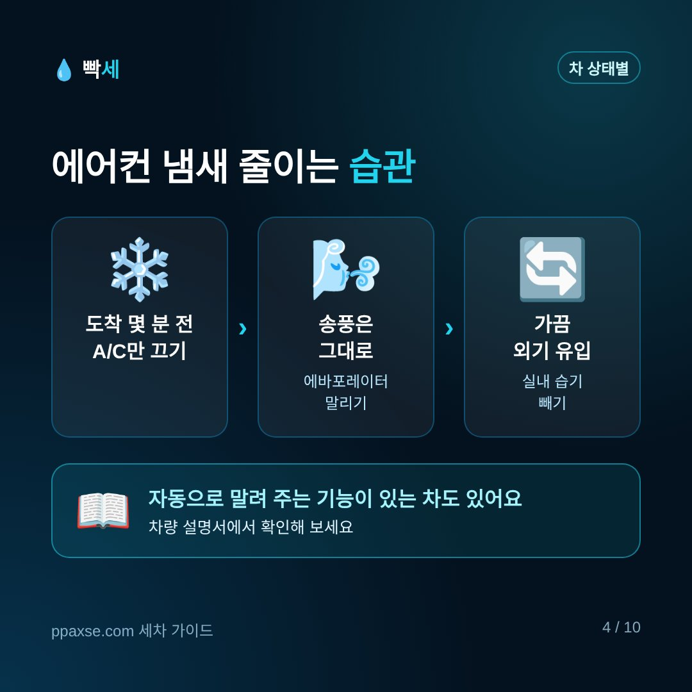
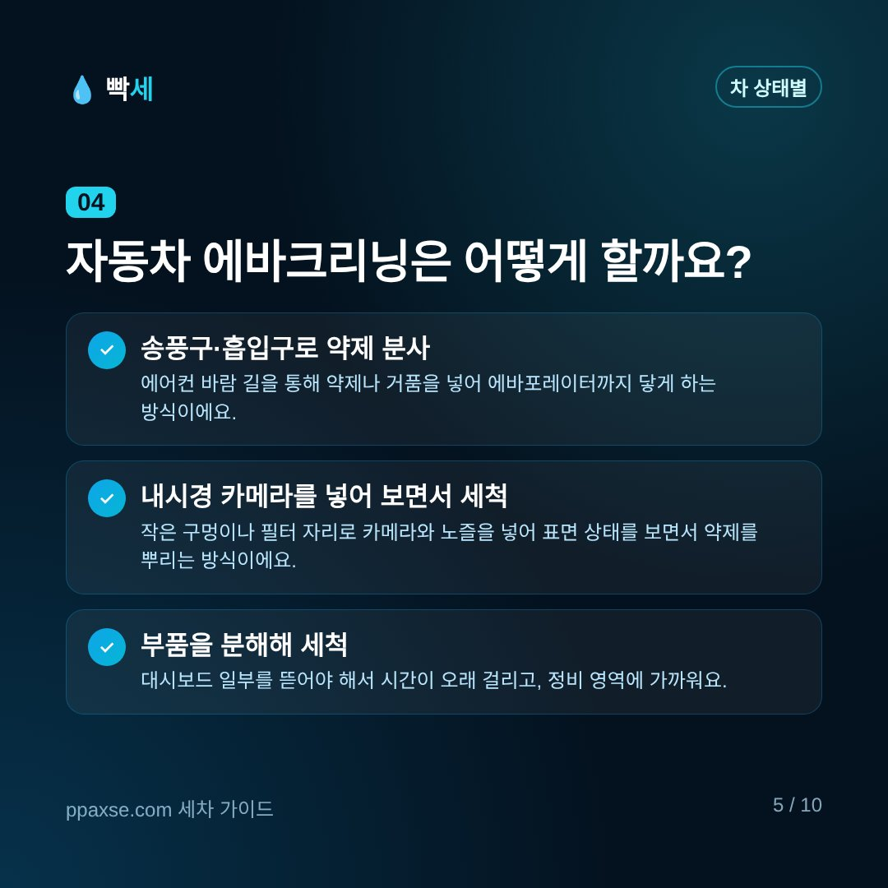
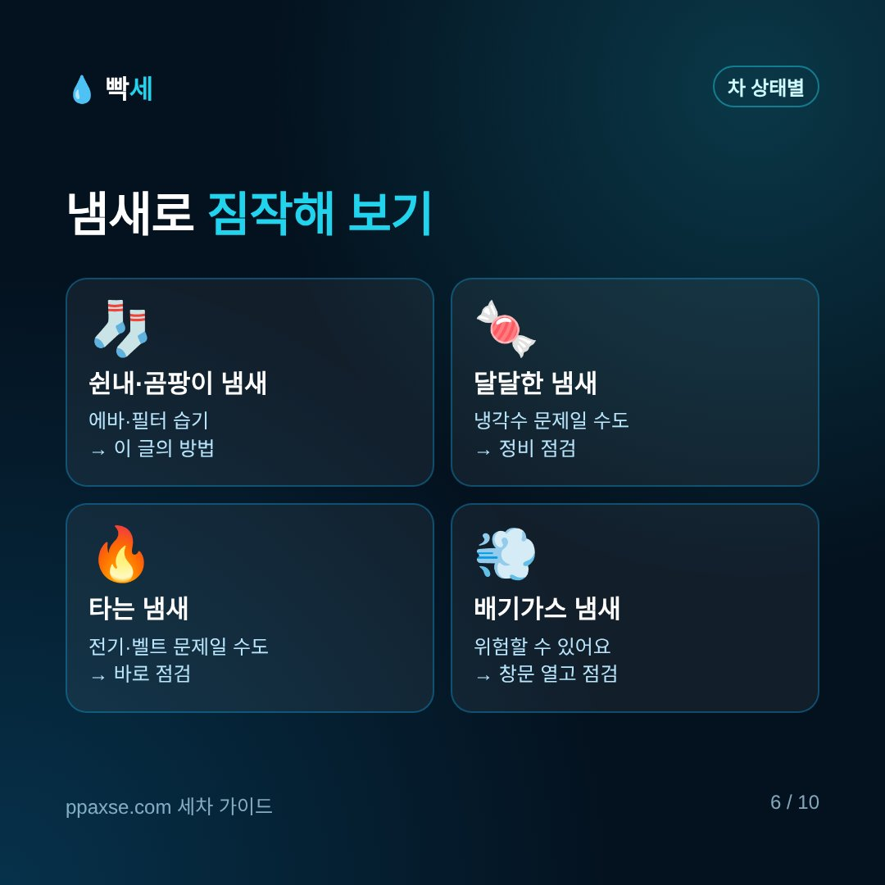
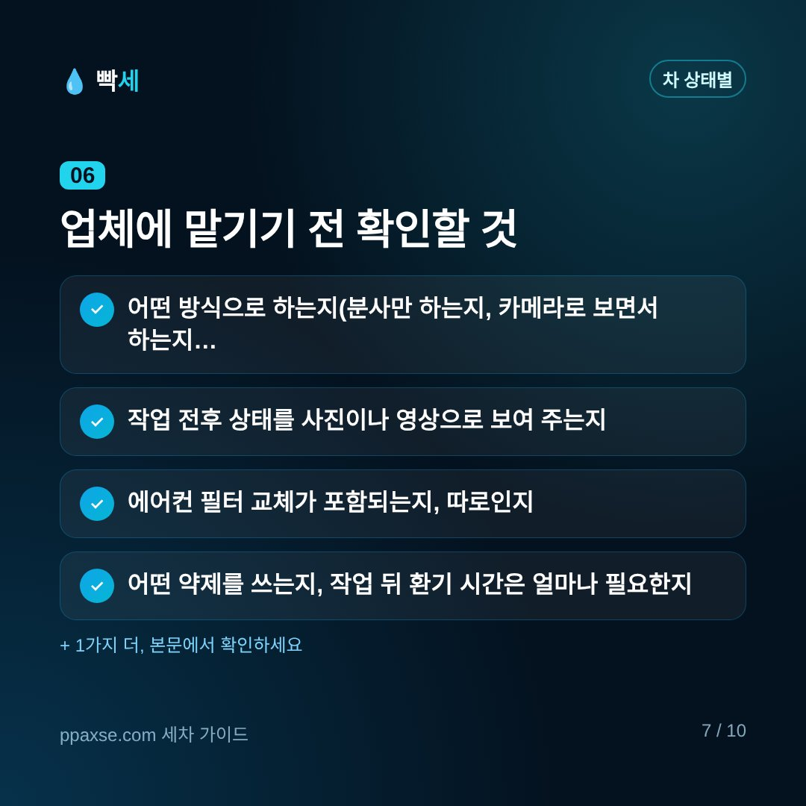

에바크리닝이란? 자동차 에어컨 냄새 줄이는 법
에어컨을 켜면 쉰내나 걸레 냄새가 난다면, 원인은 대개 에바포레이터(증발기)와 그 주변에 생긴 습기와 곰팡이·세균이에요. 에바크리닝(에바클리닝이라고도 써요)은 이 부품을 약제로 세척하는 작업을 말해요. 다만 냄새가 난다고 바로 에바크리닝부터 할 필요는 없어요. 에어컨 필터 교체와 평소 말리는 습관만으로 줄어드는 경우도 많아서, 그쪽부터 해 보는 분들이 많아요.
이 글은 자동차 에어컨 냄새가 생기는 이유, 집에서 해 볼 수 있는 것, 업체에 맡길 때 확인할 점을 정리했어요. 에어컨 구조는 차마다 다르니 차량 설명서를 함께 참고하세요.
에바포레이터가 뭐길래 냄새가 날까요?

에바포레이터는 대시보드 안쪽 깊숙이 있는 부품으로, 지나가는 공기를 차갑게 식혀 주는 역할을 해요. 공기가 차가워질 때 공기 속 수분이 이 부품 표면에 물방울로 맺혀요. 여름에 차 밑으로 물이 떨어지는 게 바로 이 물이 빠져나가는 거예요.
문제는 에어컨을 끄고 시동을 끄면, 이 부품이 젖은 채로 어두운 곳에 남는다는 점이에요. 여기에 먼지와 실내 오염이 쌓이면 곰팡이나 세균이 자라기 좋은 환경이 되고, 다음에 에어컨을 켤 때 그 냄새가 바람을 타고 나와요. 그래서 에어컨 냄새는 여름 내내 쓰고 난 늦여름이나, 오랜만에 에어컨을 켠 날 더 잘 느껴지는 편이에요.
먼저 해 볼 것: 에어컨 필터 확인

에어컨 필터(캐빈 필터, 실내 필터)는 바깥 공기가 실내로 들어오기 전에 먼지를 거르는 부품이에요. 오래 쓰면 먼지가 쌓이고 습기를 머금어 그 자체로 냄새가 나기도 해요.
- 교체 주기와 위치는 차량 설명서에 나와 있어요. 차마다 다르니 설명서를 따르세요.
- 많은 차량은 조수석 글로브박스 뒤쪽에 있어서 직접 교체하는 분들도 있어요. 어렵다면 정비소나 점검 때 함께 부탁해도 돼요.
- 필터만 바꿔도 냄새가 줄었다면 에바크리닝은 조금 미뤄도 괜찮아요.
평소 습관으로 냄새 줄이는 법

많은 분들이 쓰는 방법은 도착하기 몇 분 전에 에어컨(A/C) 버튼만 끄고 송풍은 그대로 켜 두는 것이에요. 차가운 바람이 멈춘 뒤에도 바람을 계속 보내 에바포레이터 표면을 말려 주는 거예요. 젖은 채로 멈추는 시간이 줄어드니 냄새가 덜 생겨요.
- 몇 분이 적당한지는 정해진 기준이 없어요. 날씨가 습할수록 조금 더 길게 두는 분들이 많아요.
- 일부 차량에는 시동을 끈 뒤 자동으로 말려 주는 기능(애프터 블로우 등)이 있어요. 설명서에 있는지 확인해 보세요.
- 오랫동안 내기순환만 쓰면 실내 습기가 빠지지 않아요. 가끔 외기 유입으로 바꿔 환기해 주세요.
- 실내 바닥 매트가 젖어 있거나 음식물 냄새가 남아 있으면 에어컨 냄새와 섞여 더 심하게 느껴져요. 실내 청소도 함께 해 주세요.
자동차 에바크리닝은 어떻게 할까요?

에바크리닝 방식은 업체와 장비마다 달라요. 흔히 알려진 방식은 이래요.
- 송풍구·흡입구로 약제 분사 — 에어컨 바람 길을 통해 약제나 거품을 넣어 에바포레이터까지 닿게 하는 방식이에요.
- 내시경 카메라를 넣어 보면서 세척 — 작은 구멍이나 필터 자리로 카메라와 노즐을 넣어 표면 상태를 보면서 약제를 뿌리는 방식이에요.
- 부품을 분해해 세척 — 대시보드 일부를 뜯어야 해서 시간이 오래 걸리고, 정비 영역에 가까워요.
시중에는 직접 쓰는 셀프 에바크리닝 약제도 있어요. 쓸 생각이라면 제품 설명서와 차량 설명서를 먼저 읽고, 환기가 되는 곳에서, 정해진 양과 방법만 지켜 주세요. 약제가 고이거나 전자 부품 쪽으로 흘러들지 않게 조심해야 하고, 어린이나 반려동물이 타기 전에는 충분히 환기해 주세요. 빡세는 필터 교체와 말리는 습관을 먼저 해 보고, 그래도 냄새가 남으면 업체에 맡기는 쪽을 기본으로 권해요. 손에 익은 분들은 셀프 약제를 쓰기도 하니, 정답이라기보다 빡세가 생각하는 해답에 가까워요.
냄새 종류로 짐작해 보기

냄새의 종류에 따라 원인을 짐작해 볼 수 있어요. 아래는 흔히 알려진 예시일 뿐이고, 정확한 원인은 점검을 받아야 알 수 있어요.
- 쉰내·걸레 냄새·곰팡이 냄새 — 에바포레이터나 필터에 생긴 습기와 곰팡이가 원인인 경우가 많아요. 이 글에서 다룬 방법이 도움이 될 수 있어요.
- 달달한 냄새 — 냉각수가 새는 경우에 난다는 이야기가 있어요. 세척보다 정비 점검이 먼저예요.
- 타는 냄새·전기 냄새 — 전기 부품이나 벨트 등의 문제일 수 있어요. 바로 점검을 받는 게 안전해요.
- 배기가스 냄새 — 실내로 배기가스가 들어오는 건 위험할 수 있어요. 창문을 열고 빨리 점검을 받으세요.
업체에 맡기기 전 확인할 것

에바크리닝가격은 업체, 방식, 차종에 따라 많이 달라요. 숫자만 비교하기보다 아래를 물어보면 서로 비교하기 쉬워요.
- 어떤 방식으로 하는지(분사만 하는지, 카메라로 보면서 하는지, 분해하는지)
- 작업 전후 상태를 사진이나 영상으로 보여 주는지
- 에어컨 필터 교체가 포함되는지, 따로인지
- 어떤 약제를 쓰는지, 작업 뒤 환기 시간은 얼마나 필요한지
- 작업 시간은 얼마나 걸리는지
에바크리닝 하는 곳 찾기
에바크리닝은 디테일링샵이나 실내 크리닝을 하는 손세차장에서 하는 곳이 많아요. 어떤 서비스를 하는지는 업체마다 달라서, 직접 다녀온 사람의 이야기가 가장 정확해요. 빡세 지도에서 지역별 세차장 모음을 보며 우리 동네 디테일링샵을 찾아보세요. 다녀온 곳이 있다면 어떤 방식으로 해 주는지 한마디로 남겨 주시면 다른 분들께 큰 도움이 돼요.
셀프세차·노터치·손세차를 종류별로 골라 보고, 폼건·온수·하부세차 같은 시설 정보도 확인할 수 있어요.
🗺️ 세차장 지도 열기✏️ 자주 가는 세차장에 한마디 남기기🎁 한마디를 남기면 가입 없이도 매주 기프티콘 추첨에 응모돼요.